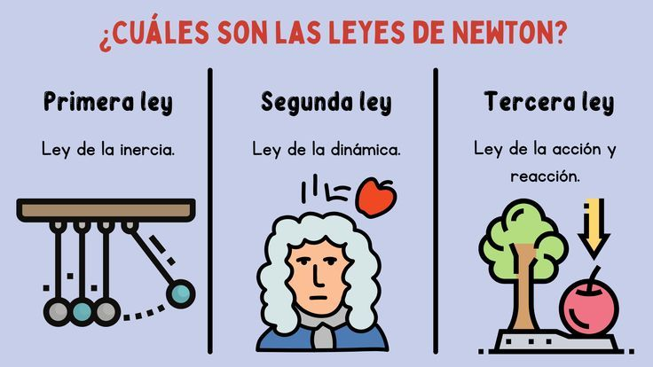
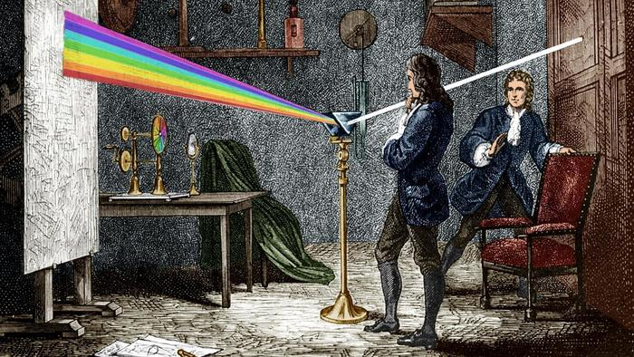

Isaac Newton
Leyes del Movimiento
En su obra maestra, Principia Mathematica, Newton formuló tres leyes fundamentales que describen cómo y por qué se mueven los objetos:
- Primera Ley (Inercia): Todo cuerpo persevera en su estado de reposo o movimiento uniforme y rectilíneo a no ser que sea obligado a cambiar su estado por fuerzas impresas sobre él.
- Segunda Ley (Dinámica): El cambio de movimiento es directamente proporcional a la fuerza motriz impresa. Matemáticamente se expresa como la ecuación
- Segunda Ley (Dinámica): El cambio de movimiento es directamente proporcional a la fuerza motriz impresa. Matemáticamente se expresa como la ecuación F = ma (Fuerza es igual a masa por aceleración). (Fuerza es igual a masa por aceleración).
- Tercera Ley (Acción y Reacción): Con toda acción ocurre siempre una reacción igual y contraria. Es decir, las acciones mutuas de dos cuerpos siempre son iguales y dirigidas en sentido opuesto.

Trabajos en Óptica
Newton transformó nuestra comprensión de la luz y el color. Mediante una serie de célebres experimentos utilizando prismas de vidrio, demostró que la luz blanca no es pura, sino que está compuesta por un espectro de colores (los colores del arcoíris).
Además, argumentó que la luz estaba compuesta por partículas (teoría corpuscular) y solucionó los problemas de distorsión de color (aberración cromática) en los telescopios de la época inventando el telescopio reflector, el cual utiliza espejos en lugar de lentes.

Gravitación Universal
Según la famosa anécdota de la manzana, Newton se preguntó por qué los objetos siempre caen hacia el centro de la Tierra. Esto lo llevó a descubrir que la misma fuerza que hace caer una manzana es la que mantiene a la Luna en órbita alrededor de la Tierra.
Formuló la Ley de Gravitación Universal, la cual establece que todos los objetos en el universo se atraen entre sí con una fuerza directamente proporcional al producto de sus masas e inversamente proporcional al cuadrado de la distancia que los separa. Su fórmula se representa como: